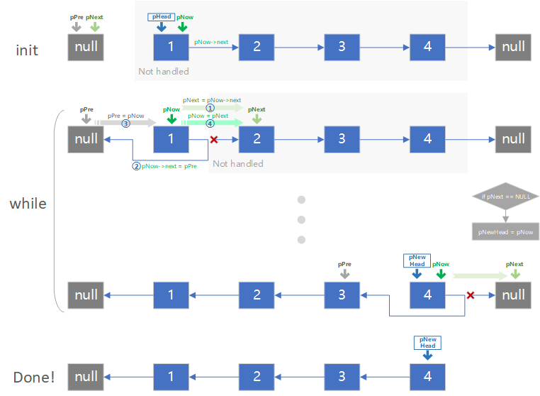

原文连接:https://www.cnblogs.com/luego/p/11421590.html
本文主要以图的方式，来呈现链表反转推演的具体过程，以助于理解，保持思路的清晰。
主要采用两种方法实现单链表反转：
（1）通过循环，通过三个指针对链表进行遍历，并逐个反转；
（2）使用递归的方法进行反转。
1. 循环反转
废话不多说，先上图：

操作过程：
① 初始化pNext至当前节点的下一个节点，为断链做准备
② 判断下一个节点是否为NULL，若为NULL则为尾节点，即反转后的头指针pNewHead指向该节点
③ 反转当前节点
④ 当前节点反转完成后，准备下一轮反转操作，pPre前进至当前节点
⑤ pNow前进一个节点
相关代码如下：
struct node
{
int data;
struct node *next;
};
typedef struct node LIST;
LIST * reverseList(LIST *phead)
{
LIST *pnow = phead;
LIST *ppre = NULL;
LIST *pnext = NULL;
LIST *newhead = NULL;
//开始遍历链表，若链表为空，返回NULL
while(NULL != pnow){
//若当前指针非NULL，则将pnext初始化为当前节点的下一个
pnext = pnow->next;
//链表只有一个元素，无需执行翻转操作
if(NULL == pnext){
newhead = pnow;
}
//当前节点指向前一个节点ppre
pnow->next = ppre;
//前一个节点ppre向后移动一个节点
ppre = pnow;
//当前节点pnow向后移动一个节点
pnow = pnext;
}
printf("Reverse done!\n");
return newhead;
}
2. 递归反转
理解对链表的反转，首先对递归的过程要有一个清晰的认识，要能找到：
① 递归的终止条件：找到尾节点
② 前后相邻两个过程的关系：原来后一个节点的next指针指向前一个节点
关于递归的内容请网上搜索相关内容。
相关操作过程如下：

首先，通过终止条件，找到尾节点；然后，依次执行反转操作，最终实现全部反转。（图中，pCur(n)代表当前处于第n次递归处理过程中）
需要注意的是，在每次执行完反转操作后，要将当前节点的next指针指向Null，即 current->next = NULL; ，否则链表会乱掉，详细分析见下图
假设当前操作指针指向【节点2】，并且在上一轮递归中，没有执行current->next = NULL; ，此时【节点3】->next = 【节点4】（见灰色箭头），此时，若执行代码current->next->next = current; 意图反转【节点3】时，current->next->next却依然指向【节点4】，会破坏原【节点4】的指向（见红色箭头），从而失去对链表的控制。
相关代码如下：
LIST *reverseList2(LIST *phead)
{
LIST *current = phead;
//当检测到链表为空，或者已经检测到尾节点时，满足终止条件，停止向下递归
if(NULL == current || NULL == current->next){
return current;
}
//执行递归操作，寻找尾节点
LIST *newhead = reverseList2(current->next);
//反转操作，目的是完成当前节点的下一个节点，完成指向当前节点的操作
current->next->next = current;
//该语句很重要！
current->next = NULL;
printf("Reverse2 done!\n");
return newhead;
}
仅一家之言，望多交流，如有错漏，还请指教！
另，做图不易，转发请注明出处 https://www.cnblogs.com/luego/p/11421590.html
本文参考：
https://www.cnblogs.com/Pushy/p/8455862.html